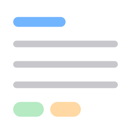

サポート
最終更新：2026 年 10 月 3 日
Dignote は、ブックマークやクリップに保存したまま読み返していない記事を、毎朝 1 本、あなた自身の過去の保存から掘り出すアプリです。保存した記事は年ごとの「地層」になり、その頃の自分が何に夢中だったかを振り返れます。
対応環境：iPhone（iOS 26 以降）。記事の情報は端末の中に保存し、外部に送りません（プライバシーポリシー）。
よくある質問
どこから記事を取り込めますか？
- ブラウザのブックマークの書き出し（HTML）
- Pocket・Raindrop・Instapaper・Notion の書き出し、そのほかの CSV
- Evernote の書き出し（ENEX）
- Markdown のフォルダ（Obsidian・Bear・Joplin・Notion など）
- Google Keep（Google データエクスポート）
- Apple メモ（ショートカットを使います）
設定の「ファイル・フォルダから取り込む」から選べます。Apple メモの手順は、設定の「Apple メモから取り込む」に載っています。
ふだんの保存はどうしますか？
Safari などの共有ボタンから「Dignote に保存」を選ぶと保存できます。ショートカットの「リンクを追加」でも保存できます。
今日の 1 本を別の記事にしたい
「今日の発掘」のカードを左にスワイプして「次を掘る」を押すと、別の記事に入れ替わります。
通知の時刻を変えたい
設定 → 通知 → 時刻 で変えられます。通知を止めることもできます。
タグを直したい
タグは端末の中の AI が自動で付けます。記事ごとに直すときは、記事の「i」ボタンから主タグ・追加タグを選びます。何件かまとめて直すときは、「タグ別」の右上の杖のボタン（タグをまとめて付ける）で、記事のタイトルに含まれる語から探して付けられます。
記事を消したい
一覧で記事を左にスワイプして「ゴミ箱へ」を押します。ゴミ箱は 設定 → 保守 → ゴミ箱 にあり、そこで戻したり、完全に削除したりできます。ゴミ箱に入れて 30 日たつと自動で削除されます。
無料で何件まで保存できますか？
100 件までです。機能はすべて無料で使えます。Dignote Pro（買い切り）を購入すると、101 件目からも保存できます。
購入を復元したい
設定 → Dignote Pro → 購入を復元 を押してください。購入したときと同じ Apple アカウントでサインインしている必要があります。
機種を変えるとき、データを引き継げますか？
設定の「iCloud 同期」をオンにしておくと、同じ Apple アカウントの iPhone の間で記事・タグ・お気に入り・発掘の記録が同期されます（保存したページの本文は同期しません）。切り替えは次にアプリを起動したときから有効になります。
すべてのデータを消したい
設定の一番下の「アプリを初期化する」で、端末上のすべてのデータを削除できます。取り消しはできません。
お問い合わせ
不具合のご報告やご要望は、GitHub の Issues からお寄せください。
Support (English)
Dignote resurfaces one article a day from the bookmarks and clips you saved but never reread, and shows your saved articles as year-by-year "strata" of your interests. Requires iPhone with iOS 26 or later. Your data stays on your device (Privacy Policy).
Import from browser bookmarks (HTML), Pocket, Raindrop, Instapaper, Notion, CSV, Evernote (ENEX), Markdown folders, Google Keep (Takeout), and Apple Notes (via Shortcuts). Save new links from the share sheet or the "Add Links" shortcut. The free version stores up to 100 items with every feature; Dignote Pro, a one-time purchase, removes the limit. To restore a purchase, go to Settings → Dignote Pro → Restore Purchase.
For bug reports and requests, please open an issue on GitHub.